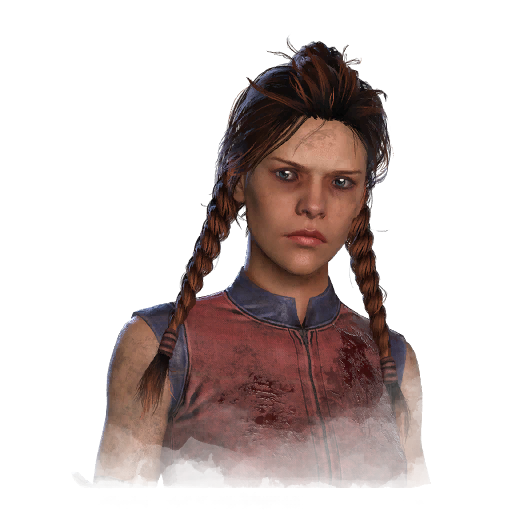
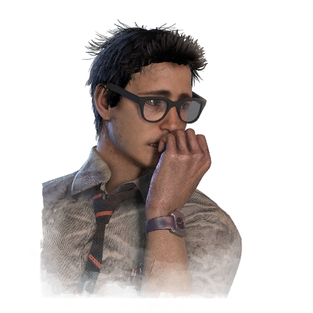
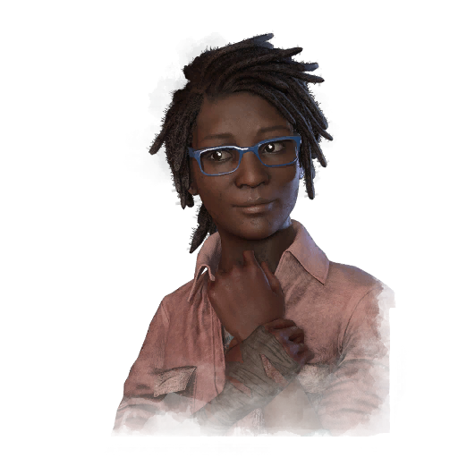
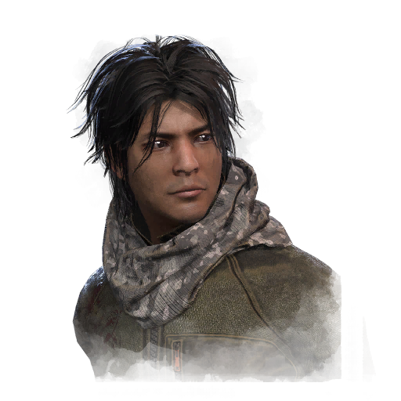
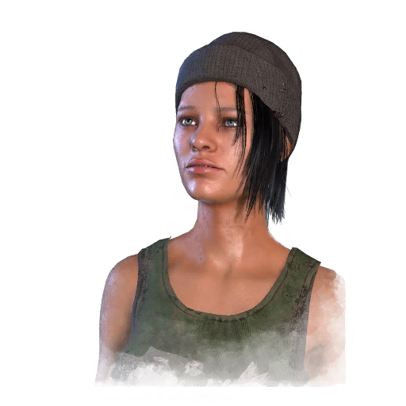
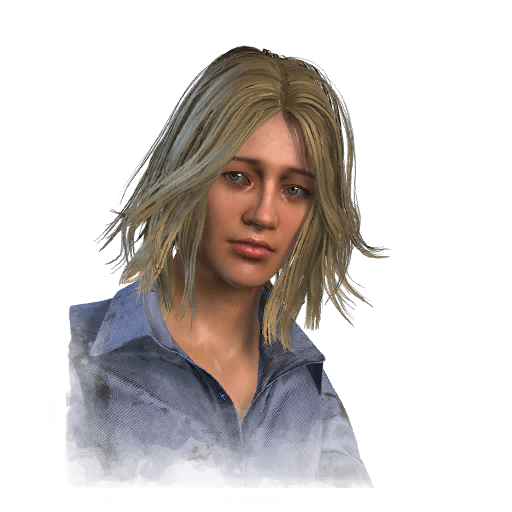
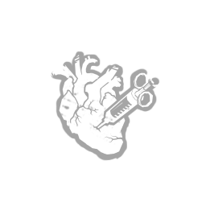
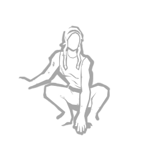
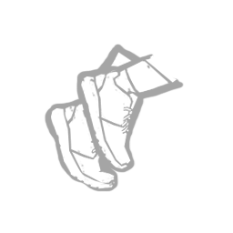

Meg Thomas
Dwight Fairfield
Claudette Morel
Jake Park
Nea Karlsson
Laurie Strode
Meg Thomas
Talvez tenha sido sua mãe que lhe incutiu o lado feroz, ou talvez tenha sido seu pai que os abandonou quando ela era bebê. Meg se destacava nos estudos, mas estava fora dos trilhos. Felizmente, um treinador de atletismo a encorajou a canalizar sua energia desperdiçada para as pistas. Ela se motivou para se tornar uma estrela do ensino médio e ganhou uma bolsa de estudos para a faculdade. Quando sua mãe adoeceu, Meg decidiu abrir mão de sua chance na faculdade para cuidar da mulher que a havia criado. Num dia de verão, em uma longa corrida nas profundezas da floresta, Meg desapareceu. Por mais que procurassem, nunca encontraram seu corpo.
Meg é uma daquelas pessoas que simplesmente está cheia de energia. Uma energia desfocada e incontrolável que precisava sair. Quando criança, ela vinha por meio de desordem e rebelião. Alguém precisava focar Meg antes que algo desse terrivelmente errado. Felizmente, alguém o fez. Ela começou a correr. Talvez de algo indefinido que alimentava sua energia. Então, correr era sinônimo de vida. Mas correr agora pode atrair aqueles seres que anseiam pela dor dos outros. Mas, ao fugir de algo, em vez de em direção a ele, ela entende algo. Ela entende que a velocidade não é essencial. É chegar à linha de chegada. Em última instância, mas ainda respirando. Ela ilude tudo o que está lá fora enquanto desliza por obstáculos e medo, conseguindo assim se manter viva.
Adrenalina

Você é alimentado por uma energia inesperada quando está prestes a escapar.
Uma vez que os portões de saída são energizados, a Adrenalina ativa:
Cura instantaneamente o equivalente a 1 Estado de Saúde. Concede +50% de Aceleração Efeito de status por 3 segundos.
A adrenalina ignora um Exausto existente Efeito de status , mas causa isso por 60/50/40 segundos.
Rápido e silencioso

"Você não faz tanto barulho quanto os outros quando salta rapidamente sobre obstáculos ou se esconde em armários."
Ao executar uma ação apressada para saltar sobre paletes ou Windows, ou para entrar ou sair dos armários, Quick & Quiet aciona seu efeito:
Suprime todos os ruídos relacionados a essas interações e a Notificação de Ruído Alto que a acompanha.
Rápido e Silencioso tem um tempo de espera de 25/20/15 segundos.
"Eles nunca vão me pegar!" — Meg Thomas
Explosão de Sprint

Começar a correr aciona o Sprint Burst:
Concede +50% de Aceleração Efeito de status por 3 segundos.
Sprint Burst causa exaustão Efeito de status por 60/50/40 segundos . A Disparada Explosiva não pode ser usada quando Exausto.
"Vejo vocês dois se mexem..." — Meg Thomas
Dwight Fairfield
Dwight era nerd e magricela no ensino médio. Ele sempre quis ser um dos garotos descolados, mas, por algum motivo, nunca teve carisma. Ele tentou entrar para o time de futebol americano, mas foi cortado, o time de basquete nem olhou e suas notas estavam nitidamente abaixo da média. Um fim de semana, em um exercício de formação de equipe em seu emprego sem futuro, o chefe de Dwight os levou para o interior da floresta antes de abrir sua bebida alcoólica caseira de família. Dwight se lembrou de tomar o primeiro gole antes de acordar tarde na manhã seguinte, sozinho. Durante a noite, os outros o abandonaram. Mais uma vez, o motivo de chacota da comunidade, Dwight tentou sair da floresta a pé. Essa foi a última vez que alguém ouviu falar de Dwight Fairfield.
Dwight não é o cara típico que você imagina quando alguém diz "Sobrevivente". Ele não tem aquele brilho especial e, sem os óculos, é mais ou menos cego. Mas, à medida que o sol se põe e a floresta ganha vida, Dwight se agarra à sua vida desregrada, certificando-se de que viverá para ver outro dia, mesmo que algo inimaginável o esteja perseguindo. Dwight não vai parar. Ele sobreviverá, não importa o que aconteça. Assim como outros passaram horas sendo vistos no ensino médio. Ele passou horas se tornando invisível e evitando perigos. E não importa se são perigos no corredor ou perigos na floresta. Sobreviver é fundamental. Enquanto outros funcionários entram em pânico quando o terror os infecta, Dwight faz uso de sua perturbadora experiência adolescente. A situação se inverteu e agora outros precisam seguir as firmes instruções de Dwight se quiserem sobreviver, pois ele sabe como desaparecer.
Ligação

Desbloqueia o potencial da sua capacidade de leitura da aura:
As Auras de todos os outros sobreviventes são revelados a você dentro de 20 / 28 / 36 metros.
"Temos que trabalhar em equipe. Preciso que você sobreviva para que eu possa sobreviver!" — Dwight Fairfield
Líder

Você é capaz de organizar uma equipe para cooperar de forma mais eficiente.
Outros sobreviventes a até 8 metros de sua localização se beneficiam do seguinte efeito:
Aumenta a velocidade de ação para Limpeza, Abertura de Portões, Cura, Sabotagem, Desenganchamento e Desbloqueio em 15 / 20 / 25 %.
Este efeito dura 15 segundos após sair da Área de Efeito.
Os sobreviventes só podem ser afetados por uma instância de Líder por vez.
Prove a si mesmo

Aumenta a velocidade de reparo em 6 / 8 / 10 % acumulável por outro sobrevivente em um raio de 4 metros de sua localização, até um máximo de 18 / 24 / 30 %.
Prove a si mesmo estende seu efeito a todos os sobreviventes dentro de seu alcance.
Os sobreviventes só podem ser afetados por uma instância de Prove Thyself por vez.
"Mostre-me o que você pode fazer!" — Dwight Fairfield
Claudette Morel
Desde o dia em que seus pais deram a Claudette seu primeiro kit de ciências, ela adorou experimentos. Sua busca obstinada a levou a uma bolsa de estudos antecipada em uma ótima faculdade. Foi uma decisão difícil deixar Montreal, mas a oportunidade era boa demais para deixar passar. Sua natureza introvertida significa que salas de bate-papo e fóruns são agora sua melhor fonte de interação social. Sua nova atividade favorita é responder a perguntas sobre botânica para outras pessoas sob seu novo apelido de Garota da Ciência. Certa noite, durante uma longa viagem de ônibus de volta da cidade, Claudette deu um passeio que mudaria sua vida. Levou apenas um minuto para ela ficar completamente desorientada na mata fechada. Ela nunca mais encontrou o caminho de volta. Seu fórum só começou a se perguntar onde ela estava uma semana depois que ela parou de postar.
Claudette não é do tipo extrovertida. Seu brilhantismo lhe proporcionou uma desvantagem social, e ela fugiu do mundo real para salas de bate-papo e fóruns. Botânica e estudos preenchem sua vida e, embora anseie por algo mais, não virá por meio de um modem. Ser lançada em uma situação da vida real pode parecer constrangedor e forçado. Mas, como está acostumada a se isolar do mundo, de repente encontra esperança nessa escuridão inexplicável que a devora lentamente. Uma planta. Uma árvore. Um arbusto. Uma simples folhagem que pode salvar uma vida. Ela se esconde dentro e entre eles. Seu conhecimento e habilidades florescem enquanto a crueldade a cerca livremente.
Conhecimento de Botânica

"Você transforma plantas encontradas ao redor da fogueira em tinturas que retardam o sangramento."
Você se beneficia do seguinte efeito permanente:
Aumenta sua velocidade de cura em 30 / 40 / 50 %.
"Conhecimento básico de botânica pode salvar sua vida algum dia" — Claudette Morel
Empatia

Desbloqueia o potencial da sua capacidade de leitura da aura:
As Auras de sobreviventes feridos ou moribundos são revelados a você dentro de 64 / 96 / 128 metros.
Autocuidados

Desbloqueia a habilidade de autocuidado:
Concede a habilidade de autocura sem precisar de um kit médico a 25 / 30 / 35 % da velocidade de cura normal.
Jake Park
Crescer como filho de um rico CEO sempre colocaria pressão sobre Jake Park. Quando seu irmão se formou com honras em Yale, a pressão sobre Jake se intensificou. Jake simplesmente não era o tipo acadêmico, mas seu pai nunca entendeu realmente sua recusa em aceitar a educação cara que ele lhe proporcionou. Eventualmente, Jake se rebelou e abandonou a escola completamente. Agora, Jake vive isolado, na orla da floresta. Faz anos que ele não fala com seu pai, mas sua mãe aparece de vez em quando. Foi ela quem finalmente chamou a polícia. Os policiais disseram que ele se perdeu na floresta e uma equipe de busca procurou por dias, mas desistiu quando o mau tempo chegou. Apesar dos apelos apaixonados de sua mãe, eles nunca retomaram a busca e Jake entrou para a história como mais uma vítima da floresta.
O destino de Jake foi traçado ainda no ventre de sua mãe. Herdeiro de riquezas, de maneiras nobres e zelador da reputação e do legado da família. Durante a tortura, não é a dor que destrói um homem, é a pressão imensa. E Jake não conseguia mais lidar com a pressão. Em vez disso, buscou o oposto de refeições requintadas e empregadas domésticas. Abandonou a rede elétrica e acabou tendo a floresta como vizinha mais próxima. Um forasteiro que se fez sozinho, Jake entende a natureza. Ele não está ali para domar algo, mas sim para se tornar selvagem. Remova os Assassinos brutais que buscam sangue para drenar e Jake se sentiria em casa. Sem Wi-Fi. Sem empresas da Fortune 500. Sem pai ou mãe. Anos longe da vida moderna deram a Jake uma nova noção dos problemas. A dor é apenas um obstáculo que o impede de ser alimentado. Não importa o que esteja te caçando, você precisa estar um passo à frente. Lute, se misture, se adapte. Só não facilite para os outros te apagarem da superfície da Terra.
Espírito calmo

Os animais parecem confiar em você, pois geralmente ficam calmos na sua presença.
Previne Corvos de serem alertados pela sua proximidade e voarem para longe, a menos que sejam pisados.
Suprime a vontade de gritar por qualquer motivo e em qualquer momento.
Suprime todos os ruídos relacionados ao desbloqueio de baús, e Totens de limpeza ou bênção.
Reduz a velocidade de interação com baús e totens em 40 / 35 / 30 %.
Vontade de Ferro

Você é capaz de se concentrar e entrar em um estado meditativo para anestesiar um pouco a dor.
Reduz o volume dos grunhidos de dor enquanto estiver no estado ferido em 80 / 90 / 100 %.
Vontade de Ferro não pode ser usada quando se sofre de Exaustão , mas não causa a Exaustão Efeito de status.
Sabotador

Desbloqueia o potencial da sua capacidade de leitura da aura:
Enquanto o Assassino carrega outro Sobrevivente, as Auras de todos os ganchos dentro de 56 metros do local de retirada original são revelados a você:
As auras dos ganchos normais são brancas.
As Auras dos Ganchos do Flagelo são amarelas.
Desbloqueia a habilidade de sabotar ganchos sem caixas de ferramentas:
Aumenta a velocidade de Sabotagem sem Caixa de Ferramentas em +30%.
Este efeito tem um tempo de espera de 70 / 65 / 60 segundos após o uso.
Nea Karlsson
Nea é descendente de suecos, pichadora e um pouco encrenqueira. Começou a se rebelar aos 16 anos, pintando o cabelo de preto e cortando-o do jeito que gostava. No início da adolescência, seus pais achavam que ela não tinha aquela coisa que torna todos os outros "normais". Ela pode ter ido longe demais quando seus amigos, sem pensar direito, a desafiaram a pichar o antigo hospício. Ela nunca mais foi vista e agora tenta o seu melhor para sobreviver aos perigos da Entidade.
Nea cresceu na pequena cidade de Hjo, na Suécia. Teve uma infância feliz, apesar de seus pais trabalharem duro. À medida que a oportunidade de se mudar para os EUA se tornou realidade, ela começou a se comportar mal. Seus pais não reagiram muito bem à mudança. Nea foi forçada a deixar seus amigos e a vida para trás. Nea se esquivava do que seus pais consideravam "normal". Em vez disso, refugiou-se em pistas de skate, e sua tag "Mashtyx" foi vista mais ou menos por toda a sua nova cidade natal, e Nea transformou em esporte a tag em prédios governamentais. Finalmente, os pais de Nea se acostumaram com o desaparecimento de Nea por alguns dias seguidos. Como ela é ágil e quase felina, consegue escapar de perigos mortais. Anos em skates provaram ser um treinamento valioso. E manter a cabeça baixa, evitando a confusão, pode ser aplicado a todos os perigos. A única questão é se ela tem algum interesse em não desistir.
Aterrissagem equilibrada

Sua agilidade e reflexos felinos são incomparáveis.
Após cair de uma altura, você se beneficia dos seguintes efeitos:
Reduz a duração do efeito Stagger ao pousar em -75%.
Suprime todos os ruídos relacionados a quedas de altura.
Concede +50% de Aceleração Efeito de status por 3 segundos ao pousar.
A aterrissagem equilibrada causa a exaustão Efeito de status por 60/50/40 segundos . A aterrissagem equilibrada não pode ser usada quando estiver exausto.
"Eu saltei de lugares mais altos." — Nea Karlsson
Manhoso nas ruas

Longas noites fora lhe ensinaram a fazer muita coisa com o que você tem.
Aumenta a eficiência dos seus itens
Itens de ajuda em 15 / 20 / 25 %.
Streetwise estende seu efeito a todos os outros sobreviventes a até 8 metros de sua localização e permanece por 15 segundos.
"Você está fazendo errado! Deixe-me mostrar como se faz." — Nea Karlsson
Evasão Urbana

Anos fugindo da polícia lhe ensinaram uma coisa ou duas sobre furtividade.
Aumenta sua velocidade de movimento agachado em 90 / 95 / 100 %.
"A tinta ainda está fresca, mas já faz tempo que parti." — Nea Karlsson
Laurie Strode
Você nunca sabe o que realmente importa na vida até perceber que ela pode acabar em breve. Laurie é uma daquelas que só quer uma vida tranquila no subúrbio, saindo com amigos, familiares e talvez um ou dois encontros. Laurie é uma adolescente típica. Você poderia encontrá-la na rua sem pensar duas vezes. Ela faz a lição de casa e é querida por seus amigos, professores e familiares. Uma simples noite como babá se transforma em algo que mudará para sempre o curso de sua jovem vida. Uma faca cortando o ar. Gritos ao longe. Barulhos que brincam com sua mente. Mas não Laurie, ela é feita de algo mais forte. Algo que não desiste.
Ataque Decisivo

Usando o que estiver à mão, você esfaqueia seu agressor em uma tentativa final de escapar.
Após ser desenganchado ou se desenganchando, o Golpe Decisivo é ativado pelos próximos 40 / 50 / 60 segundos:
Quando agarrado ou recolhido pelo Assassino, passe em um Teste de Perícia para esfaquear o Assassino e escapar de suas garras.
Atordoa o Assassino por 4 segundos.
Faz com que você se torne a próxima Obsessão.
O Ataque Decisivo é desativado quando os Portões de Saída são energizados.
O Ataque Decisivo é desativado pelo restante do Teste após o uso.
O Ataque Decisivo é desativado prematuramente ao realizar uma Ação Conspícua e permanece desativado pelo restante do Teste.
Aumenta sua chance de se tornar a Obsessão inicial, aumentando o valor padrão em +100%.
O Assassino só pode ser obcecado por um Sobrevivente por vez.
"Não há nada a temer." — Laurie Strode
Objeto de Obsessão

Um vínculo sobrenatural liga você ao Assassino.
Sempre que o Assassino lê sua Aura, Objeto de Obsessão é ativado pela mesma duração que sua ação de leitura de Aura:
A Aura do Assassino é revelada a você.
Aumenta sua velocidade de ação para ações de Limpeza, Cura e Reparo em 2 / 4 / 6 %.
Se você é a obsessão atual do assassino, o seguinte efeito é ativado automaticamente a cada 30 segundos:
Sua Aura é revelada ao Assassino por 3 segundos.
Aumenta sua chance de se tornar a Obsessão inicial , aumentando o valor padrão em +100%.
O Assassino só pode ser obcecado por um Sobrevivente por vez.
"Ele estava me observando!" — Laurie Strode
Único sobrevivente

À medida que mais amigos seus caem nas mãos do Assassino, você fica envolto em isolamento e as habilidades de leitura de aura do Assassino em relação a você são prejudicadas.
Cada vez que um Sobrevivente diferente de você é morto ou sacrificado, o Único Sobrevivente ganha 1 Ficha, até um máximo de 3 Fichas:
Concede um raio de acumulação de 20/22/24 metros por Ficha ao seu redor , até um máximo de 60/66/72 metros, dentro do qual você fica imune às habilidades de leitura de Aura do Assassino.
Quando você é o Último Sobrevivente, você se beneficia dos seguintes efeitos:
Aumenta sua velocidade de reparo em +75%.
Aumenta a velocidade de abertura do seu portão e escotilha em +50%.
Aumenta sua chance de se tornar a Obsessão inicial , aumentando o valor padrão em +100%.
O Assassino só pode ser obcecado por um Sobrevivente por vez.
"Era o bicho-papão." — Laurie Strode